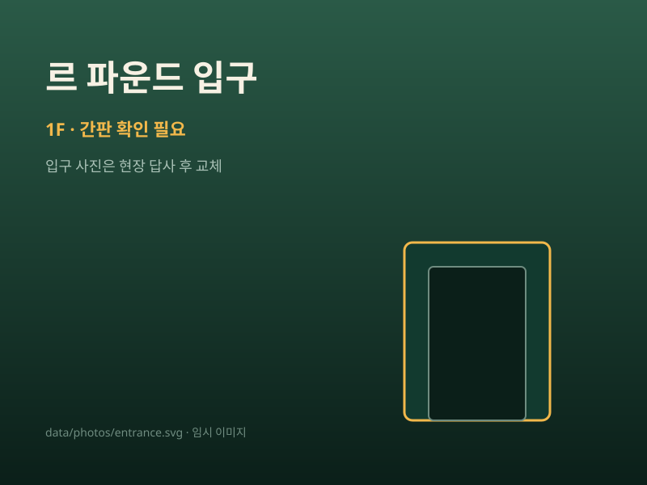
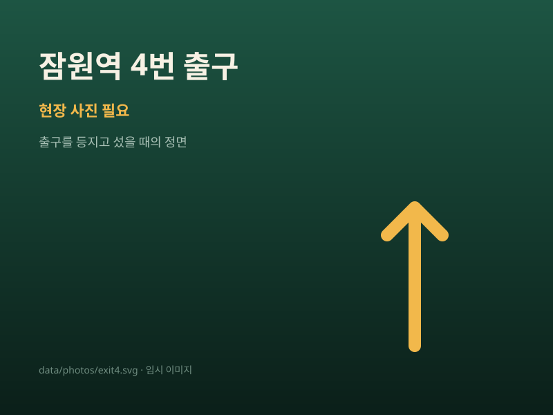

GUIDE · AI NAVIGATION
AI가 찾고,
앱이 안내합니다.
OpenCode GO에 "근처 카페 추천하고 안내해줘"라고 물으면, 마지막 100m까지 이 앱이 안내합니다.
도구로 연결됩니다
nav_search_places— 주변 카페·맛집nav_route— 도보 경로nav_open_guide— 이 앱에서 안내 시작- 깃발 화살표 — 다음 이정표까지 화살표+거리 (AR 없음)
잠원역 4번 출구 → 르 파운드 · 667m · 회전 4회 · 현장 확인 필요
깃발 화살표 모드 바로 열기 데모 채팅 보기AI 도구는 OpenCode에서 navigation 스킬로 사용할 수 있습니다.
GUIDE · 데모
무엇을 찾고 있나요?
이 근처 카페·맛집을 찾아드리고, 출구에서 입구까지 안내해요.
1차는 규칙 기반 데모 · LLM 도구 호출은 다음 단계
경로
지도 로딩…
오는 길

출발을 누르면 위치·나침반 권한을 요청합니다. 깃발 모드는 다음 이정표까지 화살표로 안내합니다.
ORIENTING
출구를 등지고 서세요

GPS 잡는 중…
GUIDING
안내를 준비하고 있어요
직진
지금
—
ARRIVING